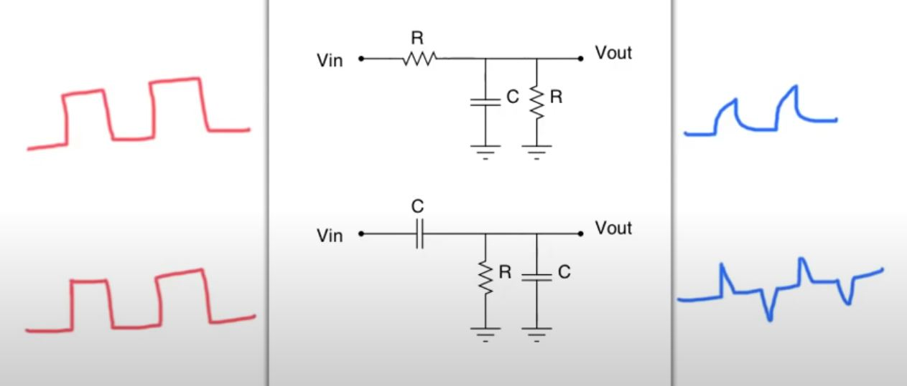
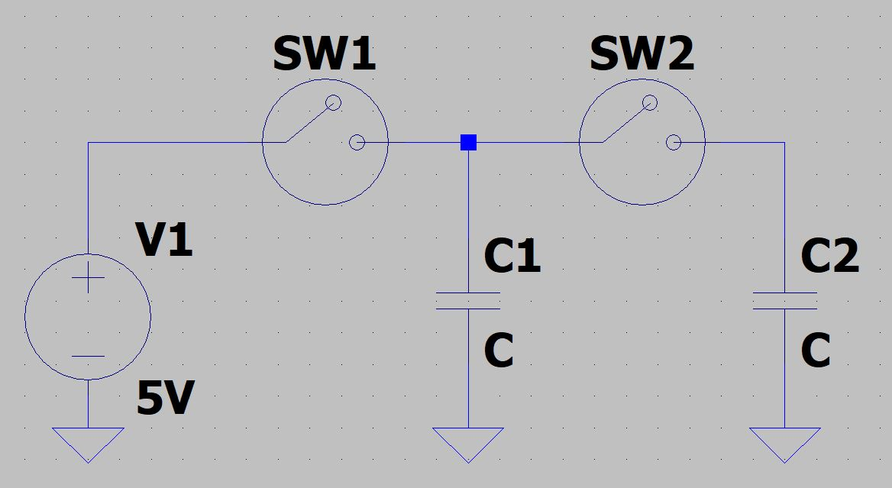
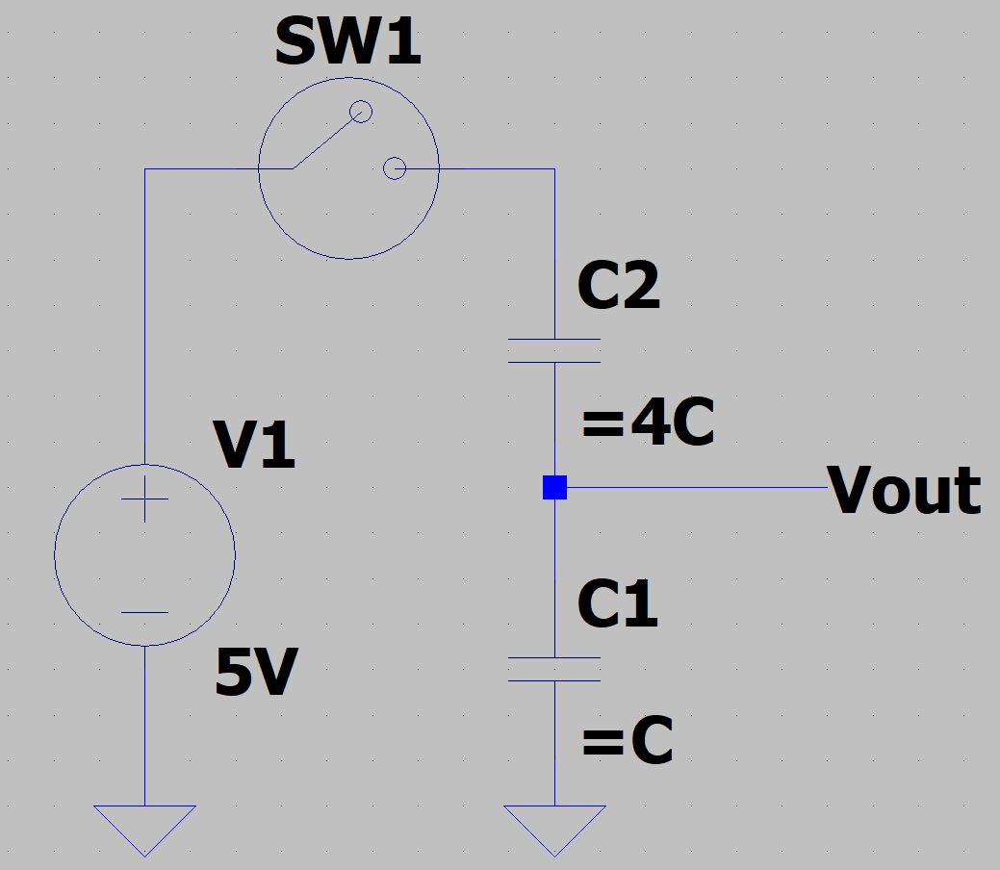

Interview Anwsers
Basic Questions
-
What is the Equation of a Voltage Divider?
-
What is the definition of Capacitance?
-
How does a FPGA differ from a Microprocessor?
-
How do ADC's work?
-
What is the point of impedance matching?
-
How does a BJT work?
-
How does a MOSFET work?
-
How does an H-Bridge work?
Boolean Alegbra
Simplifiy The Boolean Expression
Digital Logic
SR Latch
BJTs
Op-Amp
- What does Op-Amp stand for?
RC Circuits
-
Sketch the output given the input for the two circuits.

SPICE Sim R//C//R -> Click to Download
SPICE Sim C//R//C -> Click to Download
-
Given the circuit starts open, when SW1 closes. What is the voltage accross C1 and C2?

C1 will reach the same voltage as the input voltage after it has been completley charged. This time can be determined through the use of the equation \(V = Vo \cdot{} e^{-t/(RC)}\) where \(t\) is determined. Since C2 is not connected to the voltage source, it remains at 0V.
Now, SW1 opens and SW2 closes. What is the voltage across C1 and C2 given SW1 has been closed for a long time?
When SW2 is closed, the voltage on C1 is equal to 5V and the voltage on C2 is 0V. Because of the potential difference, current will flow from C1 to C2 until the potential difference is 0. To determine the final voltage, the total capacitance should be considered.
\[ \begin{equation} Ceff = C1 + C2 = 2C \\ C = \dfrac{Q}{\Delta{}V} \end{equation} \]Given C1 is charged, we know the total charge on C1 is \(Q_1 = C_1 \cdot{} \Delta{}V_1\) In order to conserve charge, \(Q_{eff}\) must equal \(Q_1\). The amount of charge cannot change.
\[ \begin{equation} Q_1 = C_{eff} \cdot{} \Delta{}V_{eff} \\ C_1(V_1) = (C_1 + C_2) \cdot \Delta{}V_{eff} \\ \dfrac{C_1(V_1)}{C_1 + C_2} = \Delta{}V_{eff} \end{equation} \]Therefore, the voltage on C1 and C2 will be equal at some value less than 5V.
-
When SW1 closes what is Vout?

Convservation of Charge
The current through C2 is the same going through C1. So the charge on \(q_1 = q_2\).
The definition of the total charge on a capacitor is \(q = c \cdot{} \Delta{}v\)
\[ \begin{equation} \Delta{} V_2 = V_{in} - V_{out} \\ \Delta{} V_1 = V_{out} - 0 \\ C_2\Delta{}V_2 = C_1\Delta{}V_1 \\ 4C(V_{in} - V_{out}) = C(V_{out} - 0) \\ 4(5V - V_{out}) = V_{out} \\ V_{out} = \dfrac{20V}{5} = 4V \end{equation} \]Advanced Examples